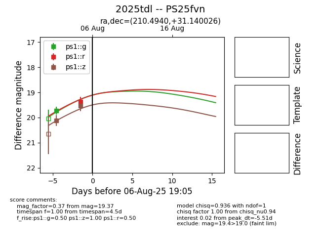

Target 2025tdl at 2025-08-07 11:09, see:
TNS: wis-tns.org/object/2025tdl
YSE: ziggy.ucolick.org/yse/transient_detail/2025tdl
alt names
2025tdl (yse,tns)
PS25fvn (panstarrs)
coordinates:
equatorial (ra, dec) = (210.4940,+31.14003)
galactic (l, b) = (51.7381,+74.10265)
photometry
last ps1::g=19.73, ps1::r=19.37, ps1::z=19.53
1 ps1::g, 1 ps1::r, 2 ps1::z detections
